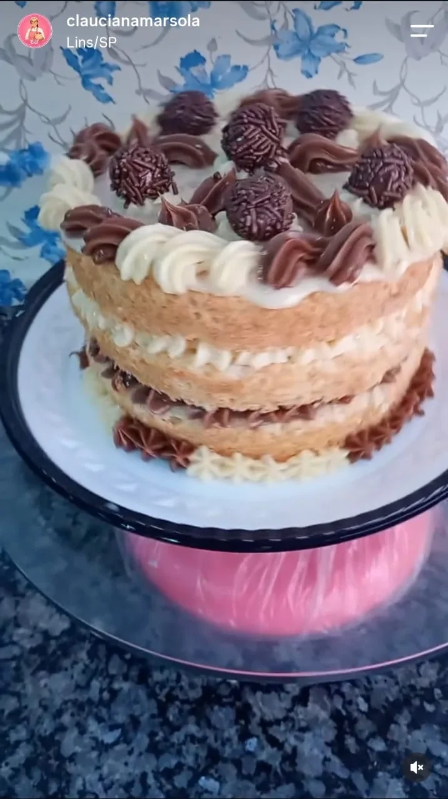
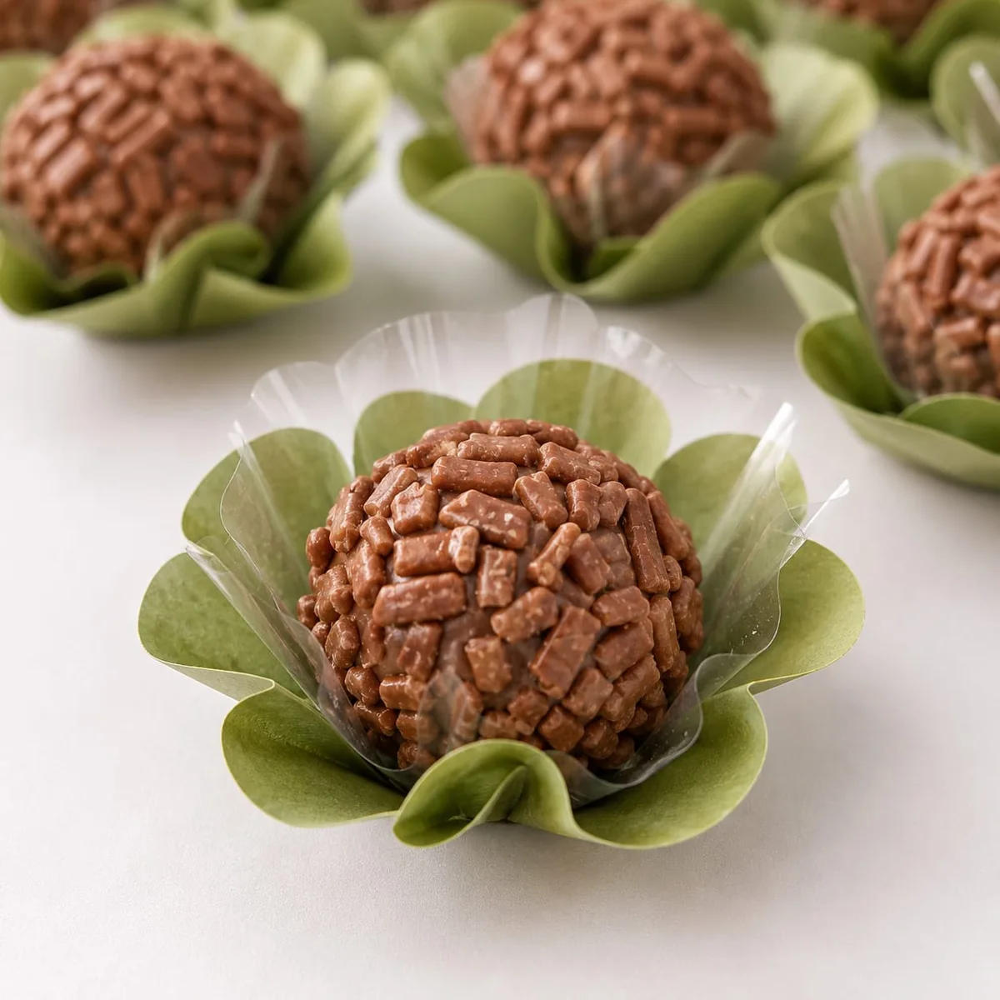
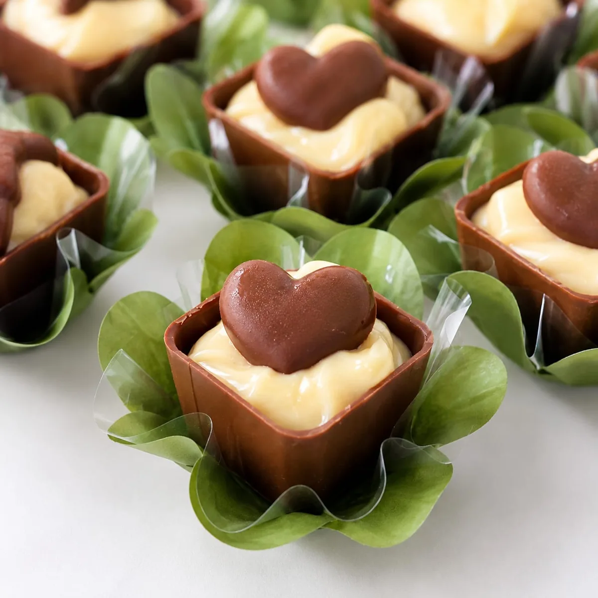
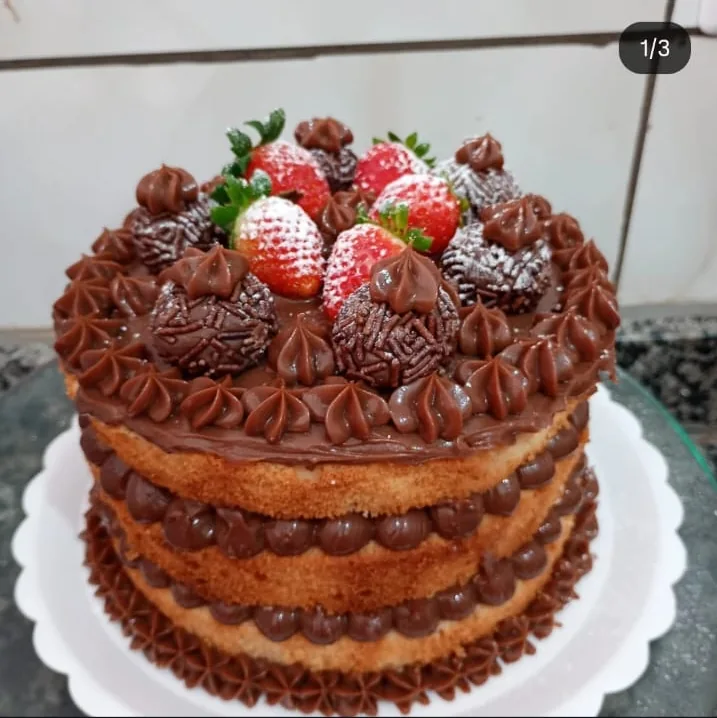
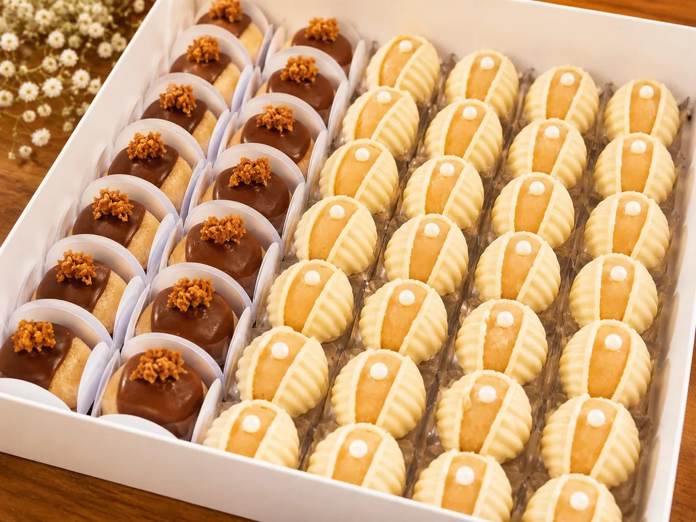
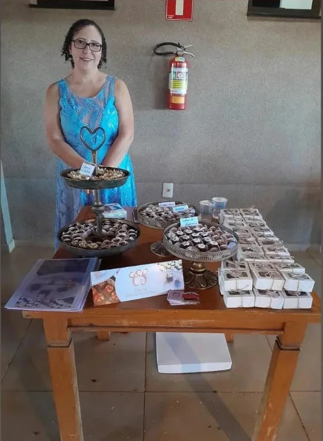
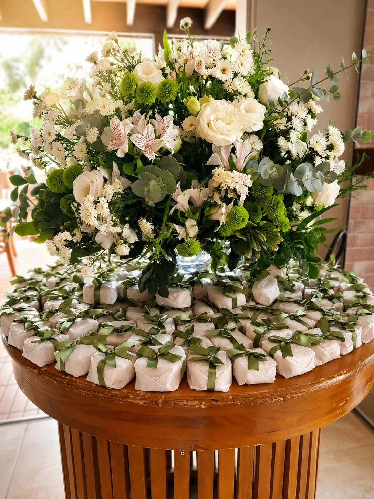
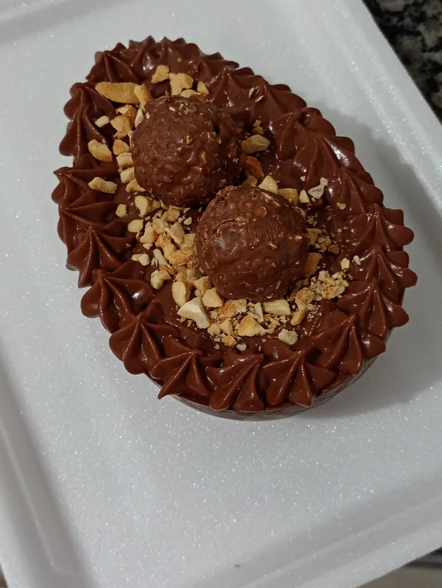
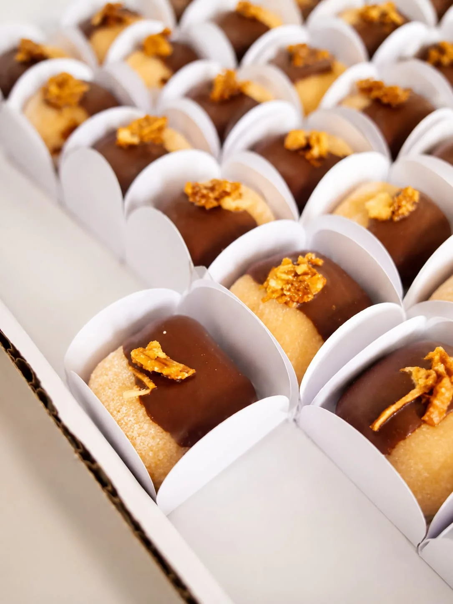
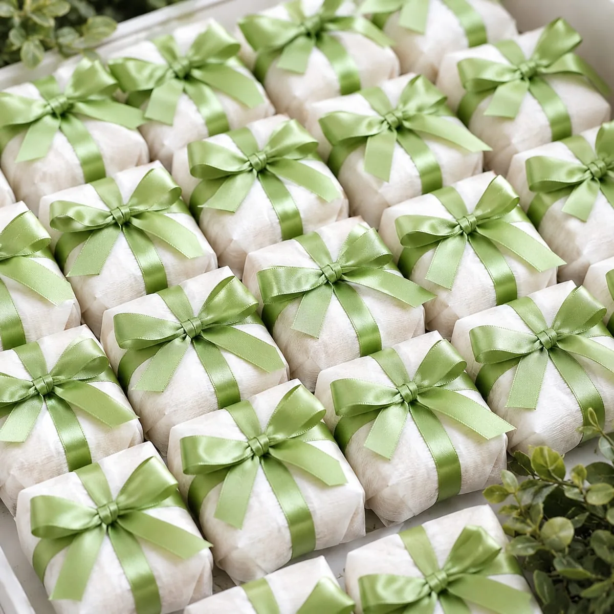

01 / 03PARA CELEBRAR
Bolos que encantam
Momentos especiais pedem um bolo à altura, com sabor de carinho e dedicação em cada camada.
Encomendar um bolo ↗Por trás de cada bolo, cada docinho e cada detalhe, existe uma história de dedicação. Conheça os sabores artesanais de Clauciana Marsola, feitos de coração para coração.






Cada doce tem um sabor. Os da Clauciana também têm uma história.
Clauciana Aparecida é uma mulher batalhadora que, há quatro anos, encontrou na confeitaria uma forma de transformar talento, esforço e carinho em algo especial.
O caminho não foi feito só de momentos fáceis. Entre altos e baixos, desafios e recomeços, ela continuou aprendendo, se aperfeiçoando e colocando cada vez mais cuidado em tudo o que faz.
Hoje, cada criação leva um pedacinho dessa caminhada. Não são apenas bolos e doces: são horas de dedicação, mãos que não desistem e uma vontade enorme de tornar o dia de alguém mais feliz.
Seja para celebrar uma conquista, presentear alguém querido ou simplesmente adoçar o dia, tem sempre um motivo para escolher algo feito com amor.

01 / 03Momentos especiais pedem um bolo à altura, com sabor de carinho e dedicação em cada camada.
Encomendar um bolo ↗Pequenos detalhes, grandes sorrisos. Delicadeza para festas, presentes e celebrações.
Encomendar doces ↗
03 / 03Chocolate, criatividade e aquele capricho que transforma um presente numa lembrança deliciosa.
Consultar opções ↗O ingrediente que nunca falta
é o amor colocado em cada detalhe.
Um pedacinho do trabalho da Clauciana, registrado com toda a beleza que existe nas coisas feitas de verdade.
Gostou de alguma criação? A gente conversa sobre a sua ideia! ♡
Quero algo assim ↗
Os melhores presentes não são necessariamente os maiores. Às vezes, cabem na palma da mão e ficam na memória por muito tempo.
Quero presentear alguém ↗♡Um clique e você já conversa diretamente com a Clauciana. Sem formulários e sem complicação.
Fale da ocasião, dos doces que imaginou e da data. Juntos, vocês combinam os detalhes.
Confira a disponibilidade e combine seu pedido. Cada detalhe é pensado com dedicação.
Uma festa, um presente ou só uma vontade de comer algo gostoso? Conte para a Clauciana o que você está imaginando.
